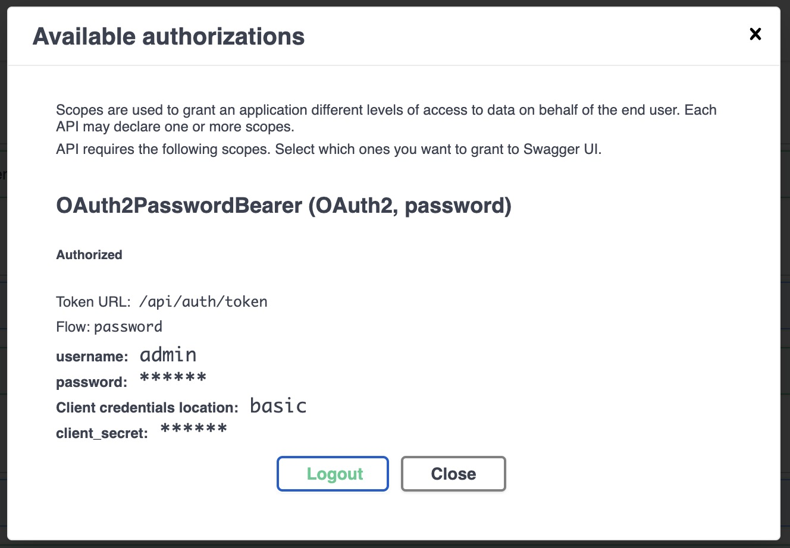
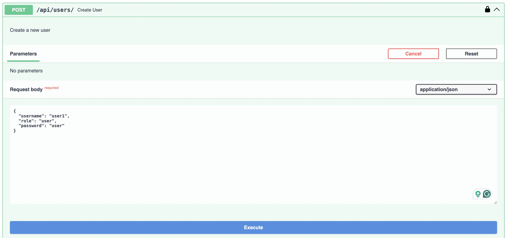
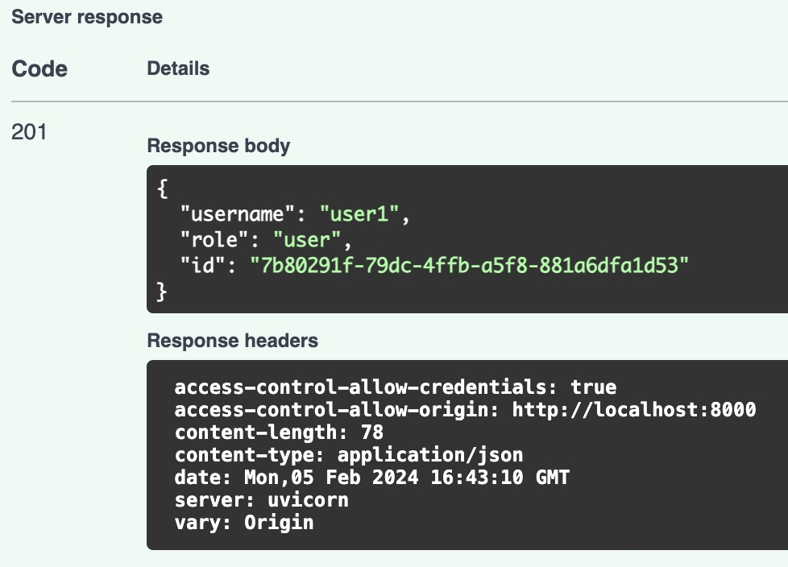

Create Users
This app has two different scopes or roles:
- Admin: Can create and manage users.
- User: Can upload and view ECGs.
To create a user, you need to be an admin. To create an admin, you need to run the following command:
scripts/create_superuser.sh <username>
If you followed the quickstart and run ./run_dev.sh you
will already have the admin user with permissions to create new users.
Login as admin
To login as admin, go to http://localhost:8000/api/docs and click on the Authorize button. Then, fill in the form with the following data:
- username:
admin - password:
<password> - scope:
admin


Create a new user
To create a new user, go to http://localhost:8000/api/docs and click on the POST /users/ endpoint. Then, fill in the form with the following data:
- username:
<username> - role:
user - password:
<password>

Click on Execute button and you will see the response with the new user data.
